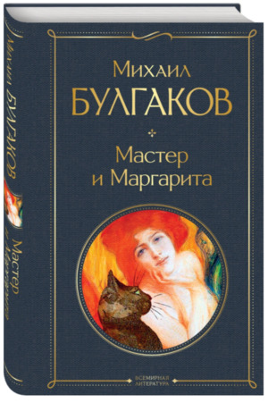

Мастер и Маргарита

Роман «Мастер и Маргарита» - произведение, в котором находят отражения философские, а значит вечные темы.
Любовь и предательство, добро и зло, истина и ложь, поражают своей дуальностью, отражая противоречивость и, вместе с тем, полноту человеческой природы.
Мистификация и романтизм, оформленные изящным языком писателя, подкупают глубиной мысли, требующей неоднократного прочтения.